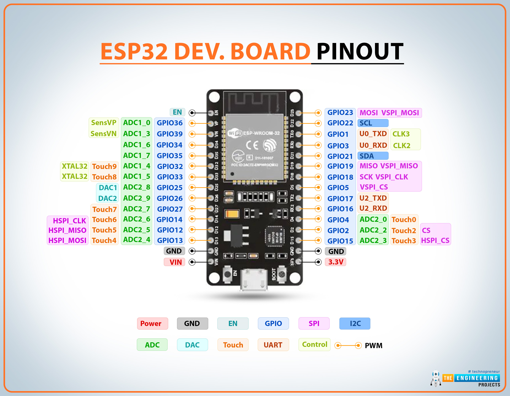
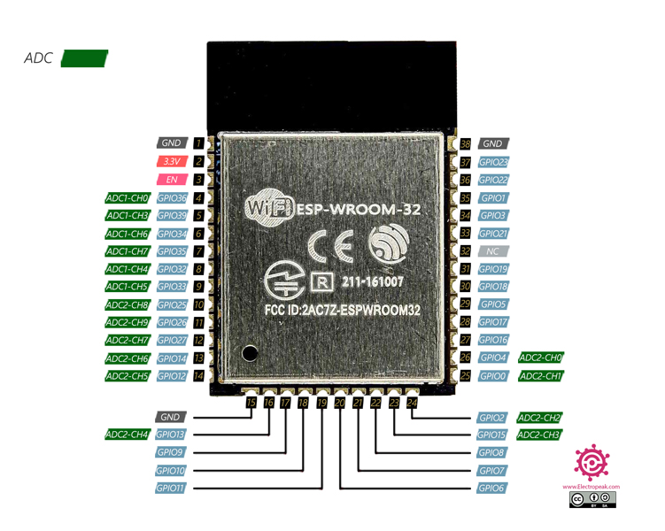
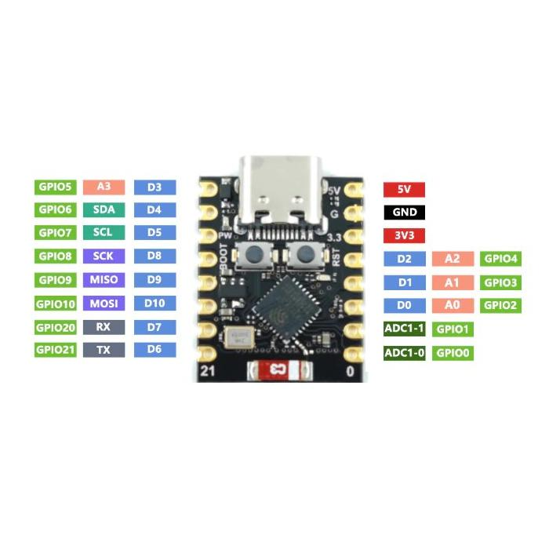

Üdvözlünk az ESP32 világában! Ha egy nagy teljesítményű, mégis kedvező árú mikrokontrollert keresel a következő elektronikai projektedhez, akkor a legjobb helyen jársz. Az ESP32 nem csupán egy egyszerű vezérlő; egy komplett platform, amely a vezeték nélküli kommunikáció és a számítási kapacitás tökéletes ötvözetét kínálja.
Az ESP32 az Espressif Systems által fejlesztett mikrokontroller-család, amely a népszerű ESP8266 utódja. A lelke egy Xtensa LX6 kétmagos processzor, amely bőséges teljesítményt nyújt a legkülönfélébb feladatok elvégzéséhez. Ami igazán kiemeli a tömegből, az a beépített Wi-Fi és Bluetooth (klasszikus és BLE) modul, amely lehetővé teszi a projektek egyszerű csatlakoztatását az internethez és más eszközökhöz.
| Tulajdonság | Érték |
|---|---|
| CPU | Xtensa Kétmagos 32-bit LX6 |
| Max. órajel | 240 MHz |
| Wi-Fi | 802.11 b/g/n |
| Bluetooth | v4.2 BR/EDR és BLE |
| GPIO pins | 34 |
Hallgasd meg, hogyan hangozhatna egy ESP32-vel vezérelt eszköz indulása:
Az ESP32 fejlesztői panel lábkiosztása és kommunikációs portjai:
Maga az ESP-WROOM-32 chip önmagában, board nélkül:
Egy kompakt verzió, az ESP32-C3 Mini, kevesebb lábbal, de modern RISC-V maggal:
